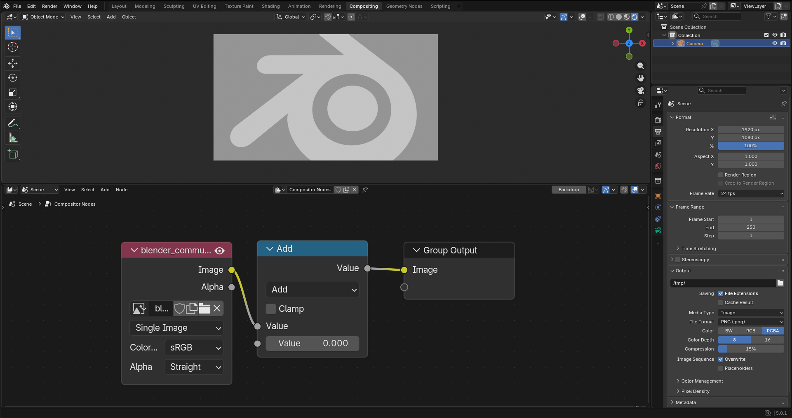
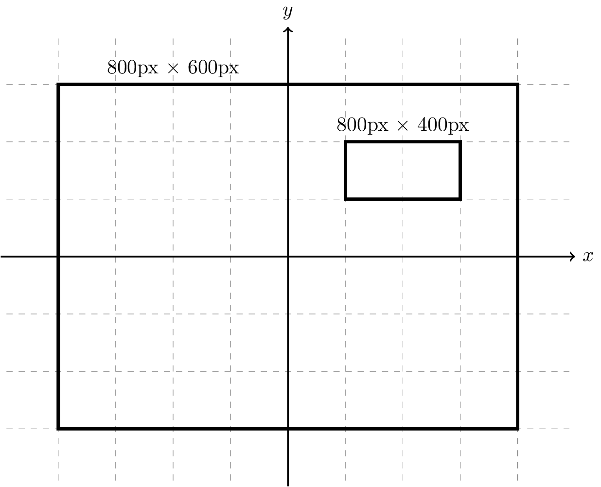
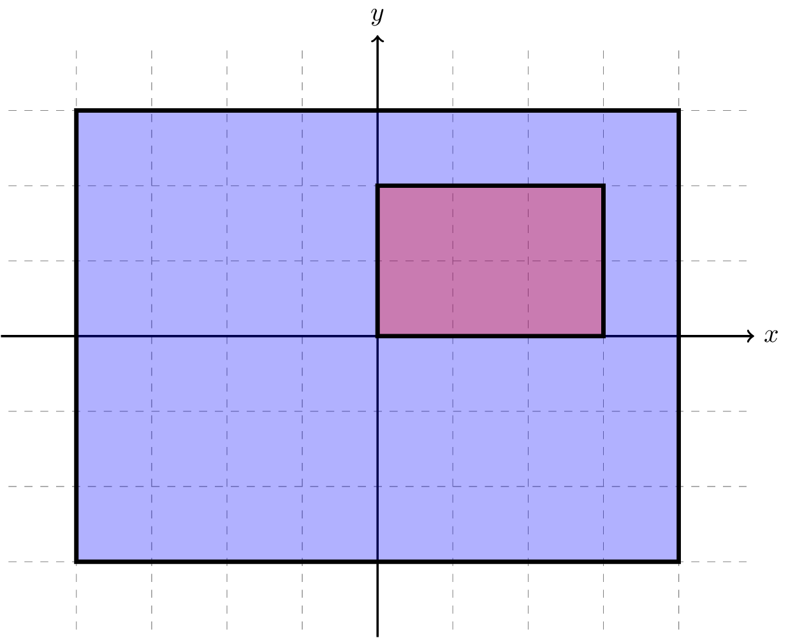
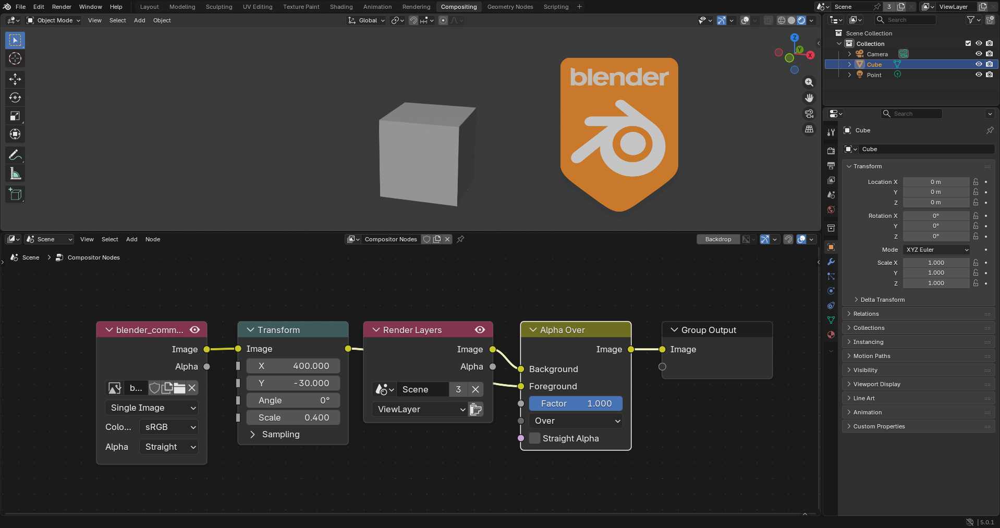
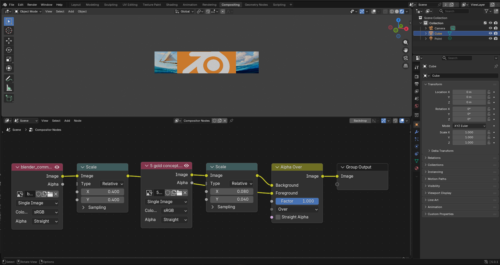
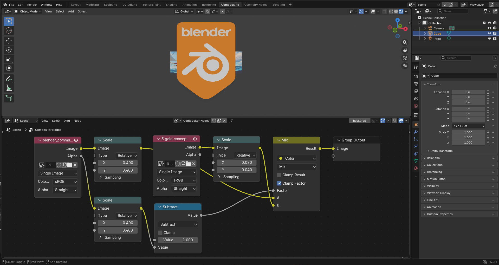
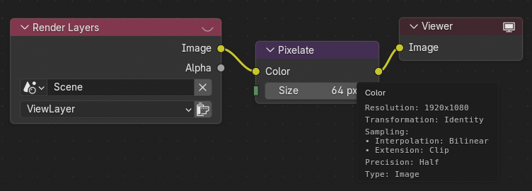

Hệ thống Compositor¶
Data¶
Chiều dữ liệu¶
Các node compositing hoạt động trên dữ liệu là một hình ảnh hoặc một giá trị đơn không có chiều. Chẳng hạn, node Levels xuất ra một giá trị đơn, trong khi node Render Layers xuất ra một hình ảnh. Các đầu vào của node cần giá trị đơn sẽ giả định một giá trị mặc định nếu được cấp một hình ảnh và bỏ qua hình ảnh đó hoàn toàn, ví dụ node Transform cần giá trị đơn cho các đầu vào của nó và sẽ giả định các giá trị mặc định nếu hình ảnh được cấp vào những đầu vào đó. Các giá trị mặc định là những giá trị được coi là đồng nhất (identity) và do đó không ảnh hưởng đến đầu ra, nên với node Transform, các đầu vào X, Y và Angle sẽ có giá trị mặc định bằng 0, còn đầu vào Scale sẽ có giá trị mặc định bằng 1. Ngược lại, nếu các đầu vào cần hình ảnh mà được cấp một giá trị đơn, giá trị đơn đó sẽ được coi là phủ kín toàn bộ không gian compositing. Chẳng hạn, node Filter cần đầu vào Factor là một hình ảnh, nhưng nếu chỉ một giá trị đơn được cấp, nó sẽ được coi là giống nhau cho mọi pixel.
Type¶
Có ba kiểu dữ liệu, tất cả đều được lưu ở định độ chính xác nửa (half precision):
- Float
Một số thực dấu phẩy động có dấu. Dữ liệu số nguyên cũng được lưu dưới dạng float vì không tồn tại kiểu số nguyên.
- Vector
Một vector 4D. Dù là 4D, nó có thể có các cách hiểu khác nhau tùy vào node sử dụng nó. Nó có thể được coi như một vector 2D với hai thành phần cuối bị bỏ qua, chẳng hạn đầu vào Vector của node Displace được coi như vector 2D. Nó có thể được coi như một vector 3D với thành phần cuối bị bỏ qua, chẳng hạn đầu vào Vector của node Separate XYZ được coi như vector 3D. Nó cũng có thể được coi như hai vector 2D liên tiếp. Chẳng hạn, Velocity Pass mà node Vector Blur nhận được được giả định chứa 2D Previous Velocity ở hai thành phần X và Y của vector, và 2D Next Velocity ở hai thành phần Z và W của vector.
- Color
Một vector 4D lưu các kênh Đỏ, Lục, Lam và Alpha của màu. Màu ở đây là tự do, không ràng buộc vào một color space hay mô hình lưu alpha cụ thể nào; thay vào đó, các node phù hợp sẽ có cài đặt để điều khiển cách biểu diễn đầu ra của mình, và có các node để chuyển đổi giữa các cách biểu diễn khác nhau.
Implicit Conversion¶
Trong trường hợp một đầu vào của node nhận dữ liệu không cùng kiểu với kiểu của nó, các phép chuyển đổi ngầm sau đây sẽ được thực hiện:
Source |
Target |
Conversion |
|---|---|---|
Float |
Vector |
f => Vector(f, f, f, 0) |
Float |
Color |
f => Color(f, f, f, 1) |
Vector |
Float |
(x, y, z, w) => Average(x, y, z) |
Vector |
Color |
(x, y, z, w) => Color(x, y, z, 1) |
Color |
Float |
(r, g, b, a) => Luminance(r, g, b) |
Color |
Vector |
(r, g, b, a) => Vector(r, g, b, 0) |
Ví dụ sau minh họa phép chuyển đổi ngầm giữa kiểu màu và kiểu float, vì node Math cần các đầu vào float.

Một ví dụ minh họa phép chuyển đổi ngầm giữa kiểu màu và kiểu float, vì node Math cần các đầu vào float.¶
Không gian Compositing¶
Domain của hình ảnh¶
Compositor được thiết kế sao cho cho phép compositing trong một không gian compositing vô hạn. Hệ quả là hình ảnh không chỉ được biểu diễn bằng kích thước, mà còn bằng phép biến đổi của nó trong không gian đó, khá giống với cách object 3D có phép biến đổi. Một phép biến đổi đồng nhất (identity) biểu thị một hình ảnh nằm chính giữa không gian. Vùng chữ nhật mà hình ảnh chiếm trong không gian đó, được xác định bởi phép biến đổi và kích thước của nó, được gọi là Domain của hình ảnh. Hình dưới đây minh họa domain của hai hình ảnh ví dụ.

Domain của hai hình ảnh ví dụ được minh họa trên không gian compositing. Một hình nằm chính giữa không gian, còn hình kia bị thu nhỏ và dịch chuyển sao cho nằm ở góc phần tư trên bên phải của không gian. Hãy để ý rằng cả hai hình có kích thước pixel tương tự nhau, nhưng kích thước biểu kiến của chúng khác nhau.¶
Hình ảnh có thể được biến đổi bằng các node như Transform, Translate và Rotate.
Operation Domain¶
Các node Compositor hoạt động trên một vùng chữ nhật cụ thể của không gian compositing gọi là Operation Domain. Các node chỉ xét vùng của hình ảnh đầu vào giao với operation domain và bỏ qua phần còn lại của hình ảnh. Nếu một hình ảnh đầu vào không phủ kín hoàn toàn operation domain, phần operation domain còn lại cho đầu vào đó sẽ được giả định là giá trị 0, vector 0, hoặc màu 0 trong suốt tùy theo kiểu dữ liệu.
Chẳng hạn, hình dưới đây minh họa trường hợp operation domain của một node là vùng màu xanh lớn và domain của hình ảnh đầu vào là vùng màu đỏ nhỏ. Khi đó, hình ảnh đầu vào không phủ kín operation domain, nên phần vùng xanh còn lại cho hình ảnh đầu vào đó được giả định bằng 0.

Một trường hợp ví dụ trong đó operation domain của node hiển thị màu xanh và domain của hình ảnh đầu vào hiển thị màu đỏ. Vì hình ảnh đầu vào không phủ kín operation domain của node, phần vùng xanh còn lại cho hình ảnh đầu vào đó được giả định bằng 0.¶
Hình minh họa trên là biểu diễn của một ví dụ thực tế trong đó người ta dùng node Alpha Over để phủ một logo nhỏ lên một hình ảnh, như hình dưới đây. Khi đó, operation domain phủ toàn bộ viewport --- như sẽ được chứng minh sau, nhưng logo chỉ phủ một vùng nhỏ của nó, nên phần vùng còn lại được giả định là màu 0 trong suốt, điều này tiện cho trường hợp sử dụng này.

Một ví dụ thực tế trong đó node Alpha Over được dùng để phủ một logo nhỏ lên hình ảnh. Logo chỉ phủ một vùng nhỏ của operation domain (trong trường hợp này là toàn bộ viewport), nên phần vùng còn lại được giả định là màu 0 trong suốt.¶
Interpolation¶
Nếu hình ảnh đầu vào của một node không thẳng hàng hoàn toàn với operation domain của node hoặc có kích thước pixel khác nhau, node thường cần thực hiện một quá trình gọi là Nội suy (Interpolation), trong đó hình ảnh đầu vào được đọc tại chính xác vị trí các pixel của operation domain. Việc này có thể được thực hiện bằng các phương pháp nội suy khác nhau, gồm nội suy Nearest-Neighbor, Bilinear và Bicubic. Các phương pháp nội suy đó được minh họa trong bộ sưu tập Wikipedia sau đây. Các node biến đổi như Transform và Rotate có tùy chọn nội suy để đặt cách chúng muốn hình ảnh đầu ra được đọc và nội suy.
Xác định Operation Domain¶
Câu hỏi còn lại là các node xác định operation domain của mình như thế nào. Các kiểu node khác nhau có thể có cơ chế xác định operation domain khác nhau. Nhưng nhìn chung, có ba lớp node về mặt cơ chế xác định operation domain, mỗi lớp được trình bày trong một trong các mục sau.
Input Nodes¶
Operation domain của các node đầu vào như node Image là một domain có phép biến đổi đồng nhất và cùng kích thước với đầu ra của chúng, nên với node Image, operation domain sẽ là domain có kích thước bằng kích thước của hình ảnh và phép biến đổi là đồng nhất.
Output Nodes¶
Operation domain của các node đầu ra như node Viewer là một domain có phép biến đổi đồng nhất và cùng kích thước với đầu ra cuối cùng của compositor. Với compositing trong viewport, kích thước đó là kích thước viewport, còn với compositing cho bản render cuối cùng, kích thước đó là kích thước render của scene.
Các Node khác¶
Trừ khi có ghi chú khác trong trang tài liệu tương ứng của từng node, mọi node còn lại dùng cơ chế sau. Một trong các đầu vào của node được chỉ định làm Domain Input của node, và operation domain của node trùng với domain của đầu vào được chỉ định đó. Với nhiều node, domain input có thể được nhận diện trực quan là đầu vào chính của node, chẳng hạn domain input của node Filter là đầu vào Image. Nhưng có một số điểm cần lưu ý, đòi hỏi phải hiểu sâu hơn về cơ chế này.
Mỗi đầu vào trong node có thuộc tính gọi là Domain Priority; operation domain của node là domain của đầu vào không phải giá trị đơn có mức ưu tiên domain cao nhất. Chẳng hạn, node Filter có hai đầu vào, mức ưu tiên domain của đầu vào Image cao hơn của đầu vào Factor, và có bốn cấu hình khả dĩ:
Cả hai đầu vào Image và factor đều được nối với hình ảnh. Khi đó, đầu vào Image là domain input vì nó có mức ưu tiên cao nhất và được nối với hình ảnh.
Đầu vào Image được nối với hình ảnh, nhưng đầu vào Factor thì không. Khi đó, đầu vào Image là domain input vì nó là đầu vào duy nhất nối với hình ảnh, bất kể mức ưu tiên của nó.
Đầu vào Image không được nối với hình ảnh nhưng đầu vào Factor thì có. Khi đó, đầu vào Factor là domain input vì nó là đầu vào duy nhất nối với hình ảnh, bất kể mức ưu tiên của nó.
Không đầu vào Image hay Factor nào được nối với hình ảnh; khi đó không tồn tại domain input vì node được đánh giá trên các giá trị đơn.
Các điểm cần cân nhắc¶
Cơ chế xác định operation domain nói trên kéo theo một số hệ quả cần được cân nhắc vì chúng có thể không mong muốn, mỗi hệ quả được trình bày trong một trong các mục sau.
Clipping¶
Đầu ra của các node sẽ được cắt (clip) một cách trực quan theo operation domain, hay chính xác hơn là theo domain của domain input. Chẳng hạn, nếu đầu vào Foreground lớn hơn đầu vào Background trong node Alpha Over, đầu ra sẽ bị cắt theo đầu vào Background vì nó là domain input, như hình dưới đây.

Đầu vào Foreground lớn hơn đầu vào Background trong node Alpha Over, nên đầu ra bị cắt một cách trực quan theo đầu vào Background vì nó là domain input.¶
Node Alpha Over hiện không hỗ trợ thay đổi mức ưu tiên domain cho các đầu vào của nó, nên để khắc phục, có thể dùng node Mix để đạt được hành vi mong muốn, lưu ý rằng đầu vào Image thứ nhất trong node Mix có mức ưu tiên domain cao nhất, như hình dưới đây.

Khắc phục hành vi cắt của node Alpha Over bằng node Mix, lưu ý rằng đầu vào Image thứ nhất trong node Mix có mức ưu tiên domain cao nhất¶
Output¶
Compositor chỉ hỗ trợ một đích đầu ra đang hoạt động duy nhất. Đích này được xác định bằng cách tìm kiếm trong ngữ cảnh node tree hiện tại theo thứ tự sau:
Node Viewer đang hoạt động trong Active Node Tree Context.
Nếu không tồn tại node nào, thì node Viewer đang hoạt động trong Root Node Tree Context.
Nếu không tìm thấy node Viewer nào, thì node Group Output đang hoạt động.
Active Node Tree Context là node tree đang được chỉnh sửa, chẳng hạn nội dung của một node group đang mở rộng. Root Node Tree Context là node tree compositor cấp cao nhất.
Hệ quả là node Viewer là tùy chọn. Khi không có node Viewer nào, node Group Output đang hoạt động được dùng cho xem trước tương tác, bên cạnh việc cung cấp đầu ra cuối cùng của compositor. Thêm một node Viewer cho phép xem trước các kết quả trung gian mà không ảnh hưởng đến đầu ra compositing cuối cùng.
Kiểm tra Socket¶

Kiểm tra Socket.¶
Tính năng kiểm tra socket hiển thị thông tin về hình ảnh chứa trong một socket sau khi node tree đã được đánh giá.
Thay vì hiển thị chính hình ảnh đó, panel kiểm tra tóm tắt các thuộc tính của hình ảnh, giúp việc kiểm chứng kết quả trung gian và gỡ lỗi node tree dễ dàng hơn.
Các thông tin sau được hiển thị:
Resolution -- Hiển thị độ phân giải hình ảnh. Nếu hình ảnh có display window, cả data window và display window sẽ được hiển thị thay thế.
Transform -- Hiển thị phép biến đổi của hình ảnh. Nếu chưa áp phép biến đổi nào, Identity sẽ được hiển thị. Nếu không, các giá trị dịch chuyển (translation), quay (rotation) và scale sẽ được hiển thị.
Sampling -- Hiển thị chế độ nội suy và lấy mẫu mà hình ảnh dùng.
Precision -- Cho biết hình ảnh được lưu với độ chính xác Full hay Half.
Ghi chú
Giá trị socket chỉ khả dụng sau khi node tree đã được đánh giá. Các node không đóng góp vào đầu ra cuối cùng thường không được đánh giá và do đó không có dữ liệu kiểm tra.
Ghi chú
Socket pixel hiện chưa được hỗ trợ.